Tela 09 • reformulação "linha de metrô"
Antes: três faixas com rota, cartões e 3D na faixa inferior (correção de composição anterior). Depois: a estratégia vira uma linha de metrô — cinco estações vazadas e uma decisão GO / NO-GO em círculos dourados, trecho contínuo (planejado) e tracejado (condicionado aos pilotos), marcador que se desloca e um painel único por trecho. Na 09.4, os canais são linhas alimentadoras que convergem para a linha principal, cuja espessura diminui como um funil. Sem cenário 3D nesta tela.
1920 × 1080
09.1 • Parceiro local e pilotos
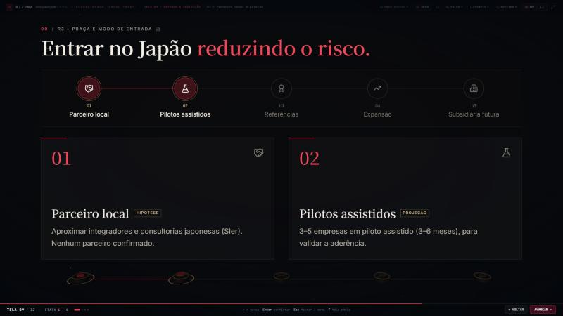
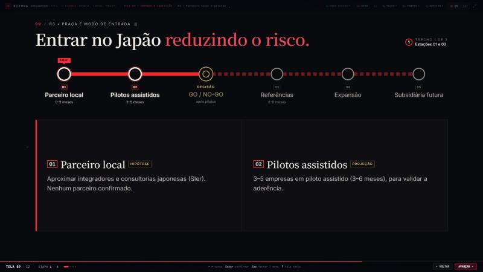
09.2 • Referências e expansão
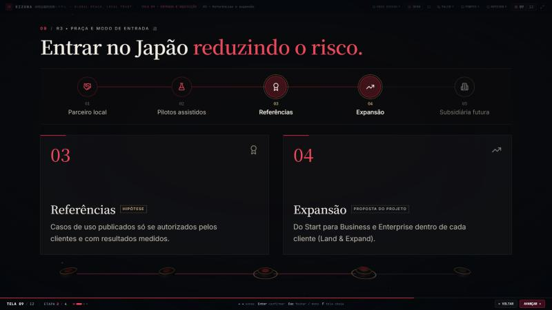
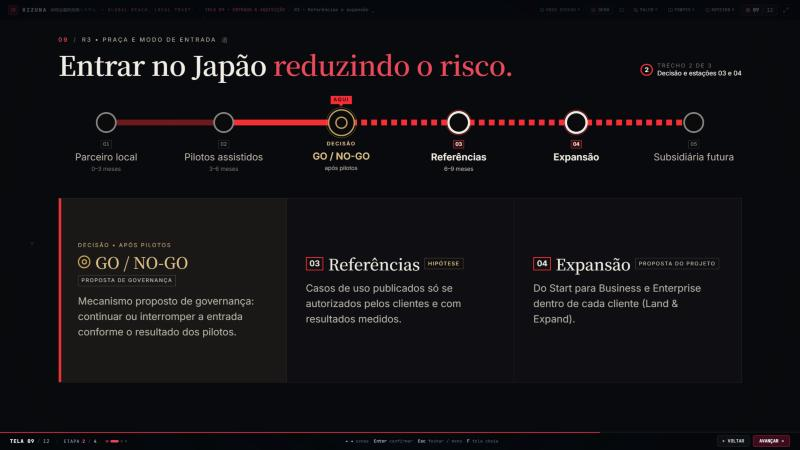
09.3 • Subsidiária futura


09.4 • Canais e linha principal

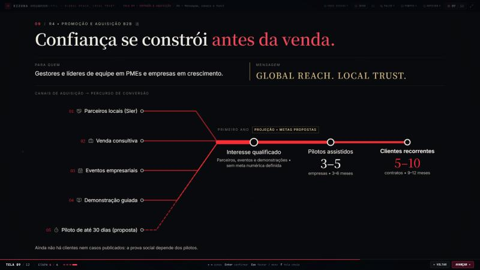
1024 × 768
09.1

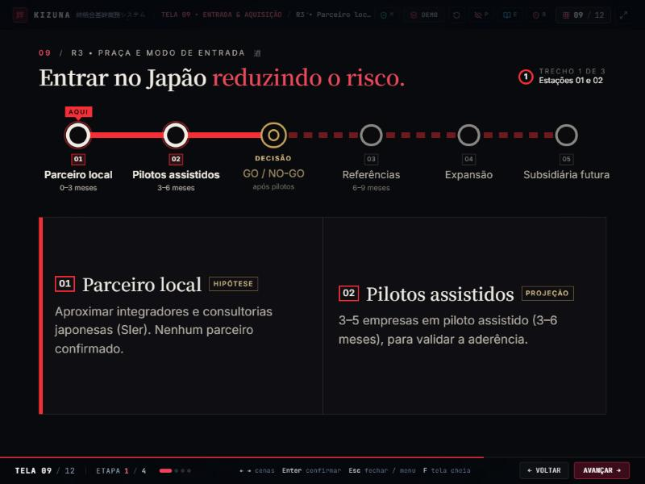
09.2

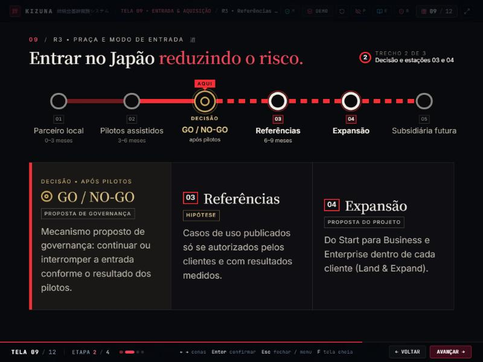
09.3
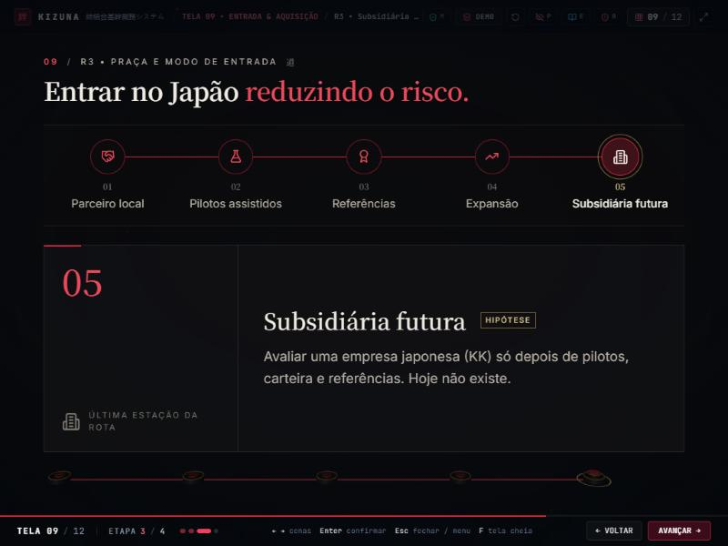
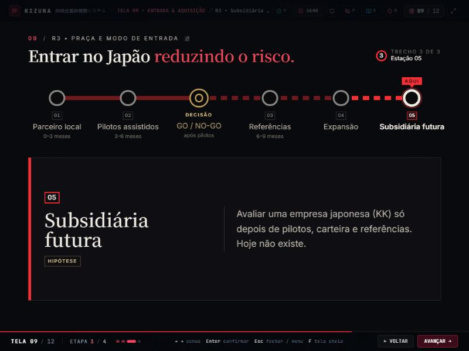
09.4
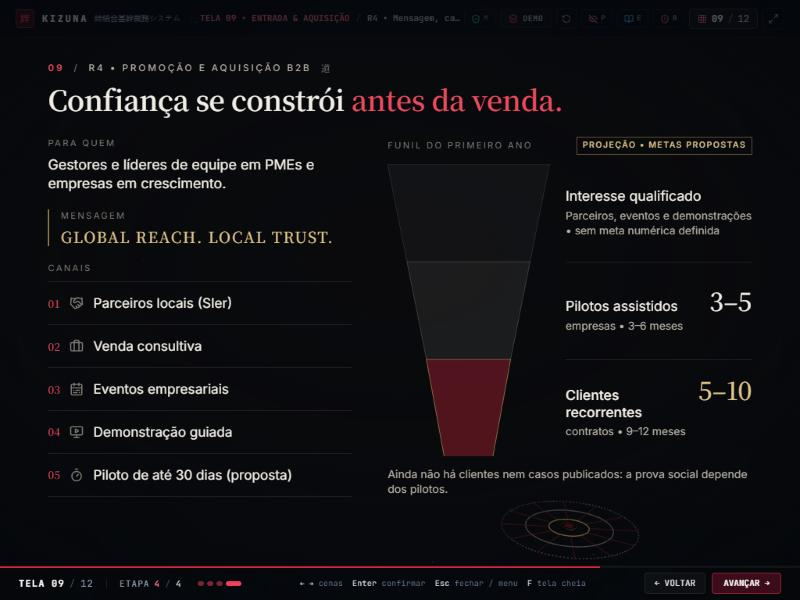
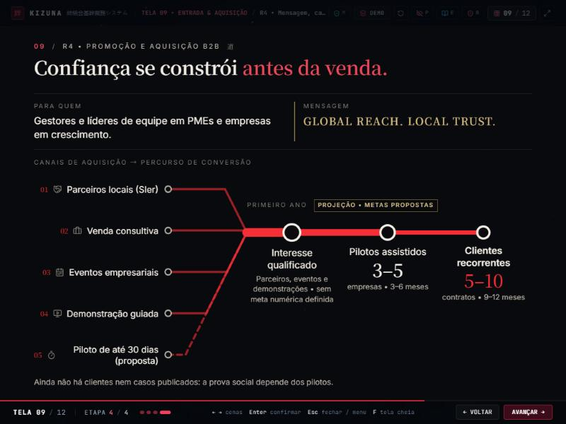
Outras resoluções (depois)
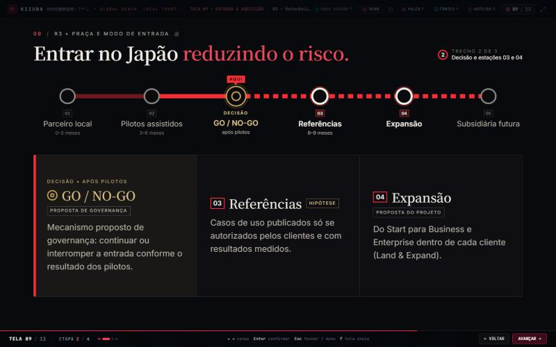
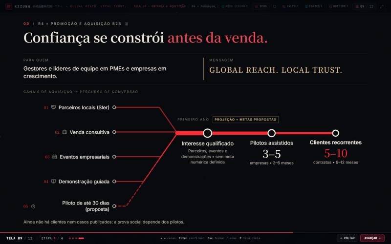
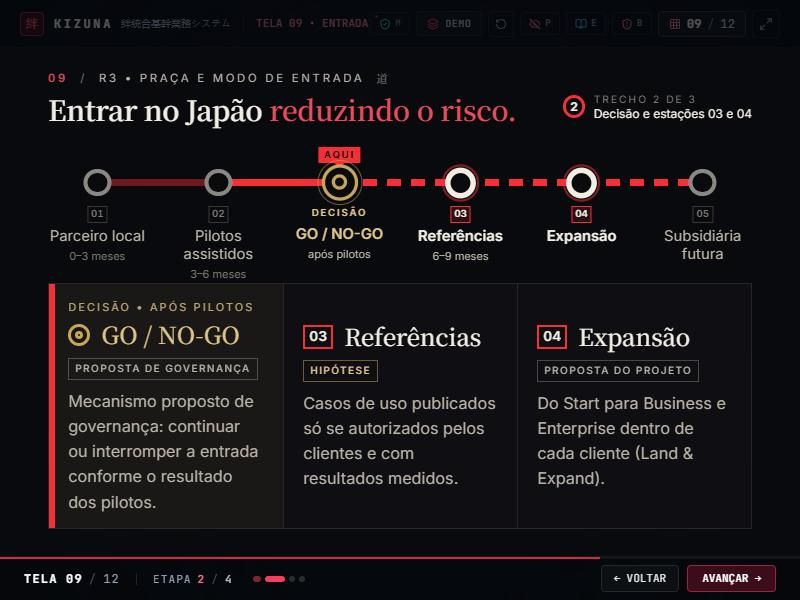
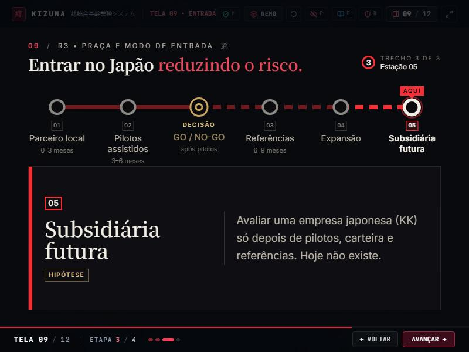
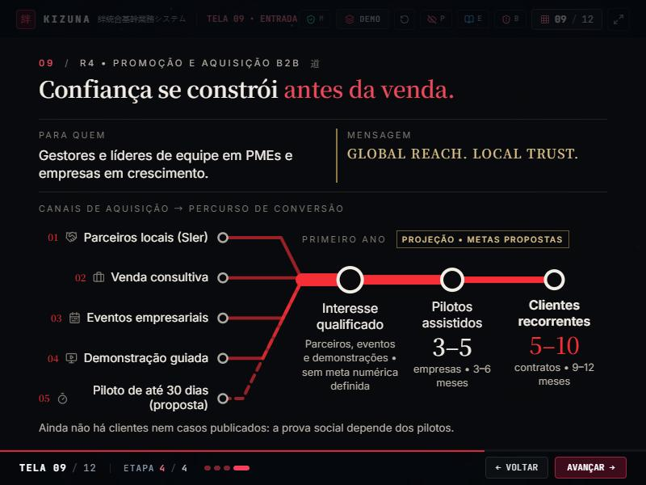